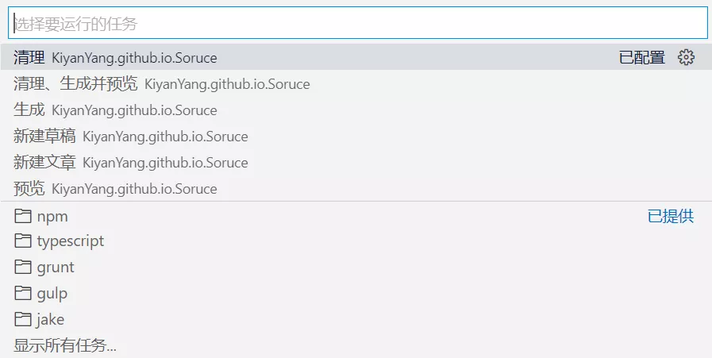

使用 VS Code 的任务（Tasks）便捷操作 Hexo
本文最后更新于：5 个月前
VS Code 的任务可以运行脚本和启动进程，通过配置任务文件进行重复性工作，可以大大提高效率。
本文章要实现目标是通过配置任务，可以使用 Ctrl+Shift+B（“运行生成任务”的快捷键）自动完成 Hexo 的清理、生成、开启本地预览，并且可以使用 VS Code 的“终端”菜单下的“运行命令”完成上述的单个命令。
配置 Tasks
工作区的特定任务是从
Workspace的.vscode文件夹中的tasks.json文件配置。
新建 tasks.json
在 Hexo 工作区的 .vscode 文件夹下新建 tasks.json 文件。
配置单个 Hexo 命令
以 hexo generate 命令为例，在 tasks.json 粘贴下面的代码。
1 | |
代码中的参数根据注释和名称自行理解，想要查看更多的参数信息或关于 Tasks 的信息可以访问官方文档 。
备注：上述任务中的 presentation 和 problemMatcher 是非必要的，但是实际使用时可以减少 VS Code 可能出现的询问次数。
配置多个 Hexo 命令
我们还需要按照上述增加其他命令，添加后的代码如下：
1 | |
备注：tasks 内的任务书写无顺序之分。
配置多个命令的顺序执行
代码如下：
1 | |
其中本例内 group 的设置是为了将任务 local clear & server 设置为 VS Code “运行生成任务…”功能的默认任务，这样我们才能通过快捷键 Ctrl+Shift+B 执行此任务。
备注：新增的这个任务是一个自身不执行任何命令的任务。
执行 Tasks
完成上面的设置后，我们在编辑了 Hexo 的文章或其他内容后使用 Ctrl+Shift+B 快捷键就可以自动完成 Hexo 的清理、生成、开启本地预览。
如果想要执行上面配置的 3 个任务中的某一个，可以点击菜单栏“终端”下的“运行任务”来执行其中的任务。

如果最近任务里没有自己定义的任务，可以点击最下方的“显示所有任务…”来查看所有定义的任务。
疑问与解答
为什么要创建 4 个任务，而不是将最后任务的依赖设为前两个，这样就只会有 3 个任务（比如如下代码），这难道不是更简洁吗？
JSON1
2
3
4
5
6
7
8
9
10
11
12
13
14
15
16
17
18
19
20
21
22
23
24
25
26
27
28
29
30
31
32
33
34
35
36
37
38
39
40
41
42
43{
"version": "2.0.0",
"tasks": [
{
"type": "shell",
"label": "清理",
"command": "hexo clean",
"presentation": {
"panel": "dedicated",
"clear": true
},
"problemMatcher": []
},
{
"type": "shell",
"label": "生成",
"command": "hexo generate",
"presentation": {
"panel": "dedicated",
"clear": true
},
"problemMatcher": []
},
// 最后一个任务执行前先执行其他两个
{
"type": "shell",
"label": "预览",
"command": "hexo server",
"presentation": {
"panel": "dedicated",
"clear": true
},
"problemMatcher": [],
"dependsOrder": "sequence",
"dependsOn": ["清理", "生成"],
"group": {
"kind": "build",
"isDefault": true
}
}
]
}解答：这样设置会导致无法使用单一的命令
hexo server，因为调用local server这个任务总会调用其他两个。当然如果你不需要有单独执行命令hexo server的任务，那你这样写也可以。只能通过
shell类型的任务来完成本次的目标吗？
答：当然不是，你也可以使用npm等类型的任务来完成目标。
附录
你也可以参考上面的任务，自己添加 Hexo 的任务，比如一键部署等。
关于我 Hexo 的 tasks.json 可以参见 VS Code 中关于 Hexo 的任务（Tasks）。
参考
- VS Code docs
- Hexo docs